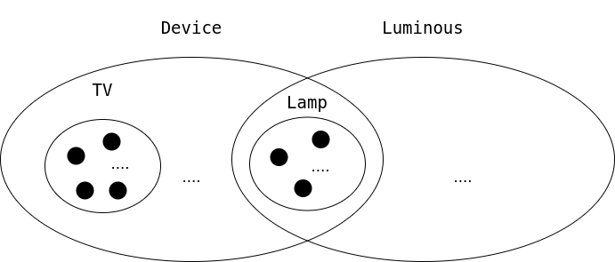

Interfacce e composizione
Progettazione e Sviluppo del Software
C.D.L. Tecnologie dei Sistemi Informatici
Roberto Casadei — roby.casadei@unibo.it
Angelo Filaseta — angelo.filaseta@unibo.it
Gianluca Aguzzi — gianluca.aguzzi@unibo.it
Riconoscimenti
-
Questo materiale è ampiamente basato su quello realizzato dal Prof. Mirko Viroli, che ringrazio.
-
Ogni errore riscontratovi è esclusiva responsabilità degli autori di questo documento.
Outline
Goal della lezione
- Illustrare concetti generali di composizione e riuso
- Introdurre il concetto di interfaccia
- Discutere il principio di sostituibilità
- Evidenziare il polimorfismo derivante dalle interfacce
Argomenti
- Tipi di composizione e loro realizzazione
- Notazione UML
interfacein Java e meccanismi collegati- Polimorfismo con le interfacce
Composizione e riuso
Intro
L’incapsulamento ci fornisce i meccanismi per ben progettare le classi
- limitando il più possibile le dipendenze con chi le usa
- e quindi riducendo l’impatto delle modifiche che si rendono via via necessarie.
$\Rightarrow$ ma le dipendenze fra classi non sono evitabili del tutto
- anzi, sono un prerequisito per fare di un gruppo di classi un sistema!
- in più, le dipendenze sono anche manifestazione di un effettivo “riuso”.
Forme di dipendenza e riuso fra classi nell’OO
- Associazione: un oggetto ne “usa” un altro (“uses”)
class A {
private B b;
}
- Composizione/aggregazione: un oggetto è “composto da” o “aggrega” altri oggetti (“has-a”)
// Composizione
class A {
private B b;
public A() {
b = new B();
}
}
// Aggregazione
class A {
private B b;
public A(B b) {
b = this.b;
}
}
- Specializzazione: un oggetto “è una forma specializzata” di un altro tipo di oggetti (“is-a”)
- la vedremo in futuro
Nella lezione corrente
Introdurremo la composizione (che è una versione più forte della associazione), mostrando la sua relazione con le interface di Java
Composizione – relazione “has-a”
Idea
- un oggetto della classe
Aè ottenuto componendo un insieme di altri oggetti, delle classiB1,B2, …,Bn- si dice che un oggetto di
Acontiene, o si compone di, o aggrega, oggetti delle classiB1,B2, …,Bn
- si dice che un oggetto di
- ossia, lo stato dell’oggetto di
Ainclude un oggetto diB1, uno diB2, …, uno diBn- si noti che si parla propriamente di composizione quando
B1,B2, …,Bnnon sono tipi primitivi, ma classi
- si noti che si parla propriamente di composizione quando
class A {
private B1 component1;
private B2 component2;
public A(B1 b1, ...) { ... }
}
Composizione vs. aggregazione
- La distinzione si basa sul ciclo di vita degli elementi contenuti rispetto al contenitore
- Aggregazione: in
A, gli oggetti composti hanno vita propria e indipendente daA- In pratica: sono spesso creati “fuori” da
A, passati adAall’atto di costruzione o via setter, e possono sopravvivere adA
- In pratica: sono spesso creati “fuori” da
- Composizione: in
A, gli oggetti composti hanno vita vincolata daA- In pratica: sono creati e distrutti entro
A
- In pratica: sono creati e distrutti entro
- Aggregazione: in
- Esempi
- Esempio di aggregazione: una
ClasseScolasticaaggrega un insieme di oggettiStudente; unaAutomobileha unMotore, quattro oggettiRuotaetc. - Esempio di composizione: una
Casasi compone di un insieme di oggettiStanza(una stanza non ha vita indipendente dalla casa); unLibrosi compone di più oggettiCapitolo(è vero, si potrebbe considerare un capitolo in isolamento, ma questo rimarrebbe comunque un capitolo di quel libro)
- Esempio di aggregazione: una
Qualche esempio di composizione
GUI
Un oggetto interfaccia grafica si compone di oggetti di tipo Button, TextField, Label, eccetera
Ateneo
Un oggetto ateneo si compone di oggetti di tipo Facoltà, Studenti, Docenti, eccetera
Controllore Domotica
Un oggetto controllore domotica si compone di oggetti di tipo Lamp, TV, Radio, eccetera
Tipiche realizzazioni
Un oggetto A si compone esattamente di 1 oggetto di B
- La classe
Aavrà un campo (privato) di tipoB - Tale campo (impostato dal costruttore di
A) è sempre presente
Un oggetto A si compone opzionalmente di 1 oggetto di B
- La classe
Aavrà un campo (privato) di tipoB - Il suo contenuto potrebbe essere
null(oggetto diBassente)
Un oggetto A si compone di un numero noto $n$ di oggetti di B
- La classe
Aavrà $n$ campi (privati) di tipoB– se “n” piccolo
Un oggetto A si compone di una moltitudine non nota di oggetti di B
- La classe
Aavrà un campo (privato) di tipoB[](o altro container)
Ricordiamo la classe Lamp
public class Lamp {
/* Costanti luminosità */
private final static int LEVELS = 10;
private final static double DELTA = 0.1;
/* Campi della classe */
private int intensity;
private boolean switchedOn;
/* Costruttore */
public Lamp() {
this.switchedOn = false;
this.intensity = 0;
}
/* Gestione switching */
public void switchOn() {
this.switchedOn = true;
}
public void switchOff() {
this.switchedOn = false;
}
public boolean isSwitchedOn() {
return this.switchedOn;
}
/* Gestione intensita' */
private void correctIntensity() { // A solo uso interno
if (this.intensity < 0) {
this.intensity = 0;
} else if (this.intensity > LEVELS) {
this.intensity = LEVELS;
}
}
public void setIntensity(final double value) {
this.intensity = Math.round((float) (value / DELTA));
this.correctIntensity();
}
public void dim() {
this.intensity--;
this.correctIntensity();
}
public void brighten() {
this.intensity++;
this.correctIntensity();
}
public double getIntensity() {
return this.intensity * DELTA;
}
public String toString() {
return "Ac: " + this.isSwitchedOn() + ", Int: " + this.getIntensity();
}
}
Un esercizio: dispositivo TwoLampsDevice
Caratteristiche del sistema da modellare
- una base su cui poggiano due lampadine
- possibilità di accendere/spegnere entrambe
- possibilità di modalità “eco” (ad es.: una sola accesa a media intensità)
Idea realizzativa 1 :(
- una classe con 4 campi, ossia le due intensità e i due flag
- sarebbe un buon design?
- riuserei codice?
- starei aderendo al principio DRY (Don’t Repeat Yourself)?
Idea realizzativa 2 :)
- riuso
Lampe sfrutto la composizione
Esempio: TwoLampsDevice
public class TwoLampsDevice {
/* Composizione di due Lamp! */
private Lamp l1; // Potrei realizzare lo stato con un array
private Lamp l2; // I clienti non ne sarebbero influenzati!
/* Composizione inizializzata al momento della costruzione */
public TwoLampsDevice(){
this.l1 = new Lamp();
this.l2 = new Lamp();
}
/* Metodi getter */
public Lamp getFirst(){
return this.l1;
}
public Lamp getSecond(){
return this.l2;
}
/* Altri metodi che lavorano sulla "composizione" */
public void switchOnBoth(){
this.l1.switchOn(); // Nota la concatenazione di "."
this.l2.switchOn(); // .. è tipico della composizione
}
public void switchOffBoth(){
this.l1.switchOff();
this.l2.switchOff();
}
public void ecoMode(){
this.l1.switchOff();
this.l2.switchOn();
this.l2.setIntensity(0.5);
}
}
La necessità di una notazione grafica – UML
UML – Unified Modelling Language
- È un linguaggio grafico semi-formale e OO-based per modellare e documentare il software
- Facilita lo scambio di documentazione, e il ragionamento su sistemi articolati e complessi
- È uno standard dell’OMG dal 1996
- È molto utile anche a fini didattici
- Noi ne useremo solo la parte chiamata Class Diagram
- Tipicamente approfondito in corsi di “Ingegneria del Software”
Class Diagram
..diagramma delle classi, una prima descrizione
-
Un box rettangolare per classe, diviso in tre aree:
- nome della classe,
- campi,
- metodi (e costruttori)
-
Su campi e metodi
- si antepone il simbolo
-se privati,+se pubblici - si sottolineano se
static - dei metodi si riporta solo la signature, con sintassi:
nome(arg1: tipo1, arg2: tipo2, ..): tipo_ritorno
- si antepone il simbolo
-
archi fra classi indicano relazioni speciali:
- con rombo (composizione), con freccia (semplice associazione)
- con triangolo (generalizzazione/specializzazione)
- l’arco può essere etichettato con la molteplicità (1, 2, 0..1, 0..n, 1..n)
A seconda dello scopo per cui si usa il diagramma, non è necessario riportare tutte le informazioni, ad esempio spesso si omettono le proprietà, le signature complete, ed alcune relazioni
Notazione UML completa per la classe Lamp:
- tipicamente usata in fase di implementazione

Notazione parziale: solo parte pubblica
- tipicamente usata in fase di design
UML: Lamp e TwoLampsDevice
Altro caso di composizione: LampsRow
public class LampsRow {
private final Lamp[] row; // Campo
public LampsRow(final int size) {
this.row = new Lamp[size]; // Tutti i valori a null
}
public void installLamp(final int position, final Lamp lamp) {
this.row[position] = lamp;
}
public void removeLamp(final int position) {
this.row[position] = null;
}
public void switchAll(final boolean on) {
for (Lamp lamp: this.row) {
if (lamp != null) { // Previene il NullPointException
if (on){
lamp.switchOn();
} else {
lamp.switchOff();
}
}
}
}
public Lamp getLamp(final int position) { // Selettore
return this.row[position];
}
public boolean isInstalled(final int position) { // Selettore
return this.row[position] != null;
}
}
UML: Lamp e LampsRow

Scenario DomusController
- Come scrivereste il metodo
switchAllin modo riusabile, e possibilmente rimandendo aperti all’introduzione di nuovi tipi di dispositivi?

Realizzazione senza riuso: schema
public class DomusController {
private Lamp[] lamps;
private TV[] tvs;
private AirConditioner[] airs;
private Radio[] radios;
//...
public void switchAll(boolean on) {
for (Lamp lamp: this.lamps) {
if (lamp != null) {
if (on){ lamp.switchOn(); } else { lamp.switchOff(); } // mal formattato!
}
}
for (TV tv: this.tvs) {
if (tv != null) {
if (on) { tv.switchOn(); } else { tv.switchOff(); } // mal formattato!
}
}
... // e così via per tutti i dispositivi
}
}
- Si noti come la struttura dei due cicli
forsia essenzialmente identica!- Cambia solo il (tipo dei) receiver e il nome delle variabili coinvolte
Interfacce
Motivazioni
1) Specifica astratta di oggetti
- Serve un meccanismo per separare esplicitamente, ossia in dichiarazioni diverse, l’interfaccia della classe e la sua realizzazione
- Si vuole poter separare fisicamente la parte di “contratto” (tipicamente fissa) con quella di “implementazione” (modificabile frequentemente)
- Si vuole poter astrarre da molteplici possibili implementazioni
class Lamp {
private final static double DELTA = 0.1;
private int intensity;
private boolean switchedOn;
// ...
public Lamp() {
this.switchedOn = false;
this.intensity = 0;
}
public void switchOn() {
this.switchedOn = true;
}
public boolean isSwitchedOn() {
return this.switchedOn;
}
public double getIntensity() {
return this.intensity * DELTA;
}
// ...
}
Estrazione del “contratto d’uso” della lampadina
interface Lamp {
void switchOn();
Boolean isSwitchedOn();
double getIntensity()
// ...
}
2) Polimorfismo: accesso uniforme a oggetti diversi
- Serve un meccanismo per poter fornire diverse possibili realizzazioni di un contratto
- Tutte devono poter essere utilizzabili in modo omogeneo
- Nel caso di
DomusController:- Avere un unico contratto per i “dispositivi”, e …
- … diverse classi che lo rispettano
DomusControllergestirà un unico array di “dispositivi”
Interfacce in Java
Cos’è una interface
- È un nuovo tipo di dato dichiarabile (quindi come le classi)
- Ha un nome, e include “solo” un insieme di intestazioni di metodi
- Viene compilato da
javaccome una classe, e produce un.class
Una interface I può essere “implementata” da una classe
- Attraverso una classe
Cche lo dichiara esplicitamente (class C implements I { ... }) Cdovrà definire (il corpo di) tutti i metodi dichiarati inI- Un oggetto istanza di
C, avrà come tipoCal solito, ma ancheI!!
Esempio: dispositivi in DomusController
Lamp,TV,Radio,AirConditionerhanno una caratteristica comune: sono dispositivi e come tali possono come minimo essere accesi o spenti.- È possibile definire una interfaccia
Deviceche tutti e 4 implementano.- Definiamo così una nuova astrazione
Interface Device
package it.unibo.interfaces.domo;
/* Interfaccia per dispositivi
Definisce un contratto:
- si può accendere
- si può spegnere
- si può verificare se acceso/spento
Nota: nessuna indicazione public/private nei metodi!
*/
public interface Device {
void switchOn();
void switchOff();
boolean isSwitchedOn();
}
Implementazioni di Device
public class Lamp implements Device {
// ...
/* NOTA: Nessun cambiamento necessario rispetto a prima!
* Di seguito si riporta la parte di `Lamp` che
* permette di rispettare il contratto di `Device`,
* ovvero di implementare l'interfaccia
*/
private boolean switchedOn;
public void switchOn(){
this.switchedOn = true;
}
public void switchOff(){
this.switchedOn = false;
}
public boolean isSwitchedOn(){
return this.switchedOn;
}
// ...
}
public class TV implements Device {
// Nessun cambiamento necessario rispetto a prima!
}
public class Radio implements Device {
// Nessun cambiamento necessario rispetto a prima!
}
Notazione UML per le interfacce
- interfaccia come box con titolo “
<< interface >> Nome”- essenzialmente, stessa notazione di una classe con in più lo “stereotipo”
<<interface>>
- essenzialmente, stessa notazione di una classe con in più lo “stereotipo”
- arco tratteggiato con punta a triangolo per la relazione “interface realization” (che modella
implements)- eventualmente, archi raggruppati (che si diramano dallo stesso triangolo) per migliorare la resa grafica

Interfacce come tipi di dato
Data l’interfaccia I, in che senso I è un tipo?
Iè un tipo come gli altri (int,float,String,Lamp,Lamp[])- è usabile per dichiarare variabili, come tipo di input/output di una funzione, come tipo di un campo
Quali operazioni sono consentite?
- esattamente (e solo) le chiamate dei metodi definiti dall’interfaccia
Quali sono i valori (oggetti) di quel tipo?
- gli oggetti delle classi che dichiarano implementare quell’interfaccia
Interfacce e assegnamenti
/* Su Lamp effettuo le usuali operazioni */
Lamp lamp = new Lamp();
lamp.switchOn();
boolean b = lamp.isSwitchedOn();
lamp.dim();
/* Una variabile di tipo Device può contenere un Lamp,
e su essa posso eseguire le operazioni definite da Device */
Device dev; // creo la variabile
dev = new Lamp(); // assegnamento ok
dev.switchOn(); // operazione di Device
boolean b2 = dev.isSwitchedOn(); // operazioni di Device
/* Attenzione: non si può invocare un metodo specifico di Lamp
su una variabile di tipo Device! */
dev.dim(); // NO!!!!
Device dev2 = new Lamp(); // Altro assegnamento
/* Attenzione, le interfacce non sono istanziabili */
Device dev3 = new Device(); // NO!!!!
Ridurre la molteplicità / aumentare riuso – prima
class DeviceUtilities {
/* Senza interfacce, non resta altro che... */
public static void switchOnIfCurrentlyOff(Lamp lamp) {
if (!lamp.isSwitchedOn()){
lamp.switchOn();
}
}
public static void switchOnIfCurrentlyOff(TV tv) {
if (!tv.isSwitchedOn()) {
tv.switchOn();
}
}
public static void switchOnIfCurrentlyOff(Radio radio) {
if (!radio.isSwitchedOn()) {
radio.switchOn();
}
}
..
}
Ridurre la molteplicità / aumentare riuso – dopo
class DeviceUtilities {
// ...
/* Grazie alle interfacce, fattorizzo in un solo metodo */
public static void switchOnIfCurrentlyOff(Device device) {
if (!device.isSwitchedOn()){
device.switchOn();
}
}
}
/* Codice cliente */
Lamp lamp = new Lamp();
TV tv = new TV();
Radio radio = new Radio();
switchOnIfCurrentlyOff(lamp); // OK, un Lamp è un Device
switchOnIfCurrentlyOff(tv); // OK, una TV è un Device
switchOnIfCurrentlyOff(radio); // OK, una Radio è un Device
Razionale delle interfacce
Quando costruire una interfaccia?
-
quando si ritiene utile separare contratto da implementazione (sempre vero per i concetti cardine in applicazioni complesse)
-
quando si prevede la possibilità che varie classi possano voler implementare un medesimo contratto
-
quando si vogliono costruire funzionalità che possano lavorare con qualunque oggetto che implementi il contratto
-
caso particolare: Quando si vuole comporre (“has-a”) un qualunque oggetto che implementi il contratto
$\Rightarrow$ l’esperienza mostra che classi riusabili di norma hanno sempre una loro interface
Quindi:
- laddove ci si aspetta un oggetto che implementi il contratto si usa il tipo dell’interfaccia
- questo consente il riuso della funzionalità a tutte le classi che implementano il contratto
Scenario DomusController rivisitato

Codice DomusController
package it.unibo.interfaces.domo;
public class DomusController {
/* Compongo n oggetti che implementano Device */
private final Device[] devices;
public DomusController(final int size) {
this.devices = new Device[size];
}
/* Aggiungo un device */
public void installDevice(final int position, final Device dev) {
this.devices[position] = dev;
}
/* Rimuovo un device */
public void removeDevice(final int position) {
this.devices[position] = null;
}
public Device getDevice(final int position) {
return this.devices[position];
}
/* Spengo/accendo tutti i device */
public void switchAll(final boolean on) {
for (Device dev : this.devices) {
if (dev != null) { // Prevengo il NullPointerException
if (on) {
dev.switchOn();
} else {
dev.switchOff();
}
}
}
}
/* Verifico se sono tutti accesi */
public boolean isCompletelySwitchedOn() {
for (Device dev : this.devices) {
if (dev != null && !dev.isSwitchedOn()) {
return false;
}
}
return true;
}
}
Codice TV
public class TV implements Device {
/* Campi della classe */
private boolean switchedOn;
/* Costruttore */
public TV() {
this.switchedOn = false;
}
/* Metodi per accendere e spegnere */
public void switchOn() {
this.switchedOn = true;
}
public void switchOff() {
this.switchedOn = false;
}
public boolean isSwitchedOn() {
return this.switchedOn;
}
public String toString() {
return "I'm a TV..";
}
}
Uso di DomusController
public class UseDomusController {
public static void main(String[] s) {
// Creo un DomusController
final DomusController dc = new DomusController(10);
// Installo dei dispositivi
dc.installDevice(0, new Lamp());
dc.installDevice(1, new Lamp());
dc.installDevice(2, new Lamp());
dc.installDevice(3, new TV());
dc.installDevice(4, new TV());
dc.installDevice(5, new Radio());
// Li accendo tutti
dc.switchAll(true);
// Verifico l'accensione
final boolean b = dc.isCompletelySwitchedOn(); // true
System.out.println("Completely switched on: " + b);
}
}
Tipi, sottotipi, sostituibilità, polimorfismo
implements come relazione di “sottotipo”
Un tipo è considerabile come un set di valori/oggetti
- $T_{boolean} = \lbrace true, false \rbrace$
- $T_{int} = \lbrace -2147483648,\ldots,-1,0,1,2,\ldots,2147483647 \rbrace$
- $T_{Lamp} = \lbrace X|\textrm{$X$ is an object of class Lamp} \rbrace$
- $T_{Device} = \lbrace X|\textrm{$X$ is an object of a class implementing Device} \rbrace$
- $T_{String} = \lbrace X|\textrm{$X$ is an object of class String} \rbrace$
Lamp è un sottotipo di Device!
- Un oggetto della classe
Lampè anche del tipoDevice - Quindi, da $X \in T_{Lamp}$ segue $X \in T_{Device}$
- Ossia, $T_{Lamp} \subseteq T_{Device}$, scritto anche:
Lamp <: Device
Ogni classe è sottotipo delle interfacce che implementa!
Visione insiemistica

- Gli insiemi (ovali) denotano tipi
- Un insieme contenuto in un altro insieme è un sottotipo
- Gli elementi (punti neri) denotano oggetti
Sottotipi e principio di sostituibilità
Principio di sostituibilità di Liskov (1993)
Se B è un sottotipo di A allora ogni oggetto (o valore) di B può(/deve) essere utilizzato dove un programma si attende un oggetto (o valore) di A
Nel caso delle interfacce
Se la classe C implementa l’interfaccia I, allora ogni istanza di C può essere passata dove il programma si attende un elemento del tipo I.
class Lamp implements Device { ... }
public void workOnDevice(Device d) { if(d.isSwitchedOn()) { ... } }
Lamp l = new Lamp();
Device d = l; // ok, ci si attende un Device
workOnDevice(l); // ok, il parametro dev'essere un Device
Si rischiano errori?
No. Il programma può manipolare gli elementi del tipo I solo mandando loro i messaggi dichiarati in I, che sono sicuramente “accettati” dagli oggetti di C. Il viceversa non è vero.
Nota: I è più generale di C, ma fornisce meno funzionalità!
Polimorfismo
Polimorfismo = molte forme (molti tipi)
Ve ne sono di diversi tipi nei linguaggi OO
- Polimorfismo inclusivo: subtyping
- Polimorfismo parametrico: genericità
Polimorfismo inclusivo
Il polimorfismo inclusivo precisamente l’applicazione del principio di sostituibilità di Liskov
- Se il tipo
Bè una specializzazione diA(lo implementa)… - … allora si può usare un oggetto
Bdove se ne attende uno diA
Polimorfismo e interfacce
Una delle pietre miliari dell’OO
Cdeve “usare” uno o più oggetti di un tipo non predeterminato- (l’uso potrebbe essere una composizione, come nel caso precedente)
- l’interfaccia
Icattura il contratto comune di tali oggetti - varie classi
C1,C2,C3(e altre in futuro) implementanoI Callora può focalizzarsi nel solo uso di oggetti di tipoI(astraendo da eventuali altri dettagli)- dunque
Cnon avrebbe dipendenze rispettoC1,C2,C3
- dunque

Late binding (o dynamic binding)
public static void switchOnIfCurrentlyOff(Device device){
// Collegamento dinamico con i metodi da invocare..
if (!device.isSwitchedOn()){
device.switchOn();
}
}
/* Codice cliente */
Lamp lamp = new Lamp();
switchOnIfCurrentlyOff(lamp); // OK, un Lamp è un Device
Collegamento dinamico/ritardato
Accade con le chiamate a metodi non-statici
- Dentro a
switchOnIfCurrentlyOff()mandiamo adevicedue messaggi (isSwitchedOneswitchOn), ma il codice da eseguire viene scelto dinamicamente (ossia “late”), dipende dalla classe dell’oggettodevice(Lamp,TV, …) - Terminologia:
deviceha tipoDevice(tipo statico), ma a tempo di esecuzione è unLamp(tipo run-time)
Early (static) vs late (dynamic) binding
- “statico” vuol dire “a tempo di compilazione” (compile-time)
- “dinamico” vuol dire “a tempo di esecuzione” (run-time)
interface I {
void m();
}
class C1 implements I {
void m(){ System.out.println("I'm istance of C1");}
}
class C2 implements I {
void m(){ System.out.println("I'm istance of C2");}
static void m2(){ System.out.println("I'm a static method of C2");}
}
// Codice cliente
I i = Math.random() > 0.5 ? new C1() : new C2();
i.m(); // collegamento al body da eseguire è late, ossia dinamico
C2.m2(); // collegamento al body da eseguire è early, ossia statico
Differenze
- Early: con metodi statici (o finali–come vedremo nel caso dell’ereditarietà)
- Late: negli altri casi
Altri Meccanismi delle Interfacce
Altri aspetti sulle interfacce
Cosa non può contenere una interface?
- Non può contenere campi istanza
- Non può contenere il corpo di un metodo istanza
- Non può contenere un costruttore
Cosa potrebbe contenere una interface?
- Java consentirebbe anche di includere dei campi statici e metodi statici (con tanto di corpo), ma è sconsigliato utilizzare questa funzionalità per il momento
- Da Java 8, i metodi possono avere una implementazione di default, che vedremo
public interface I4 extends I1, I2, I3 {
void doSomething(String s);
// da Java 8
double E = 2.718282; // implicitamente public, static, final
default void doSomethingTwice(String s) { doSomething(s); doSomething(s); }
static double PI() { return Math.PI; }
}
Le interface includano solo intestazioni di metodi!
Implementazione multipla di interfacce
Implementazione multipla di interfacce
Dichiarazione possibile: class C implements I1,I2,I3 { ... }
- Una classe
Cimplementa siaI1cheI2cheI3 - La classe
Cdeve fornire un corpo per tutti i metodi diI1, tutti quelli diI2, tutti quelli diI3- se
I1,I2,I3avessero metodi in comune non ci sarebbe problema, ognuno andrebbe implementato una volta sola
- se
- Le istanze di
Channo tipoC, ma anche i tipiI1,I2eI3
Esempio Device e Luminous
/* Interfaccia per dispositivi */
public interface Device { // Contratto:
void switchOn(); // - si può accendere
void switchOff(); // - si può spegnere
boolean isSwitchedOn(); // - si può verificare se acceso/spento
}
/* Interfaccia per entità luminose */
public interface Luminous { // Contratto:
void dim(); // - si può ridurre la luminosità
void bright(); // - si può aumentare la luminosità
}
public class Lamp implements Device, Luminous {
// ...
public void switchOn(){ ... }
public void switchOff(){ ... }
public boolean isSwitchedOn(){ ... }
public void dim(){ ... }
public void bright(){ ... }
}
Visione insiemistica

Estensione interfacce
Estensione
Dichiarazione possibile: interface I extends I1,I2,I3 { ... }
- Una interfaccia
Idefinisce certi metodi, oltre a quelli diI1,I2,I3 - Una classe
Cche deve implementareIdeve fornire un corpo per tutti i metodi indicati inI, più tutti quelli diI1, tutti quelli diI2, e tutti quelli diI3 - Le istanze di
Channo tipoC, ma anche i tipiI,I1,I2eI3
Esempio LuminousDevice
public interface Device {
void switchOn();
void switchOff();
boolean isSwitchedOn();
}
public interface Luminous {
void dim();
void brighten();
}
/* Interfaccia per dispositivi luminosi */
public interface LuminousDevice extends Device, Luminous {
// non si aggiungono ulteriori metodi
}
public class Lamp implements LuminousDevice {
// ...
public void switchOn(){ ... }
public void switchOff(){ ... }
public boolean isSwitchedOn(){ ... }
public void dim(){ ... }
public void brighten(){ ... }
}
Qualche esempio dalle librerie Java
https://docs.oracle.com/en/java/javase/17/docs/api/java.base/module-summary.html
Interfacce base
java.lang.CharSequence: contratto per oggetti rappresentanti “sequenze di caratteri” leggibili- implementata da, ad esempio:
StringeStringBuffer(stringhe mutabili)
- implementata da, ad esempio:
java.lang.Appendable: contratto per oggetti su cui “appendere” (ovvero, aggiungere in coda) sequenze di caratteri (CharSequence)- implementata da, ad esempio:
StringBuffer
- implementata da, ad esempio:
java.io.DataInput: lettura di oggetti di tipi primitivi a partire da un flusso di dati binariojava.io.Serializable: interfaccia “tag” (vuota, senza metodi) per oggetti “serializzabili”javax.swing.Icon: interfaccia per icone in interfacce grafiche
Implementazioni multiple
final class String implements CharSequence, Serializable, ... { ... }class ImageIcon implements Icon, Serializable, ... { ... }
Estensioni di interfacce
interface ObjectInput extends DataInput { ... }
Preview del prossimo laboratorio
Obbiettivi
Familiarizzare con:
- Costruzione di semplici classi con incapsulamento
- Costruzione di classi con relazione d’uso verso una interfaccia